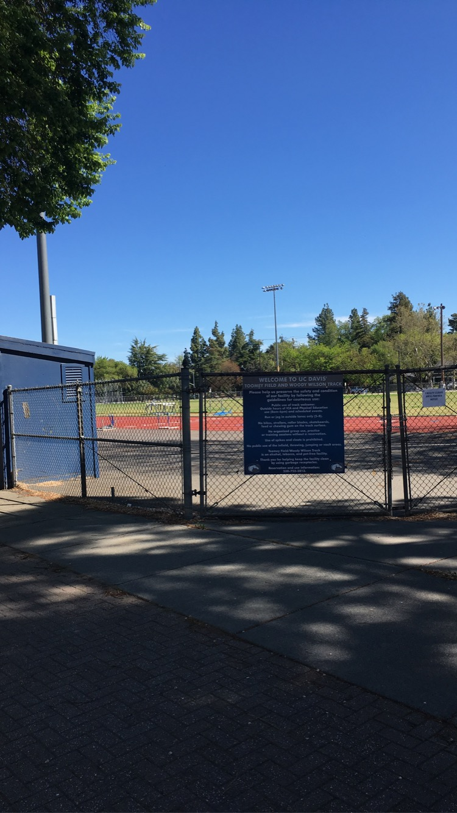
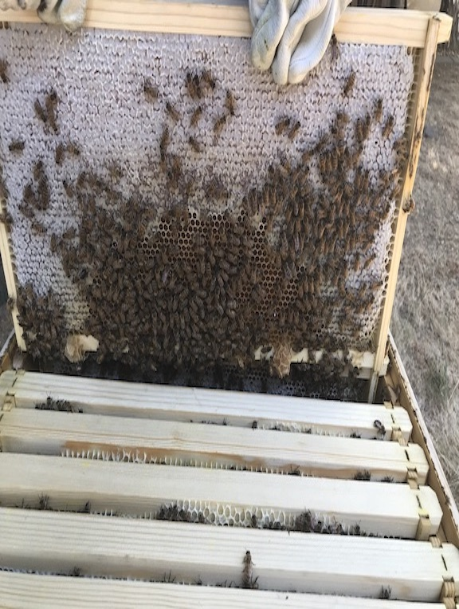
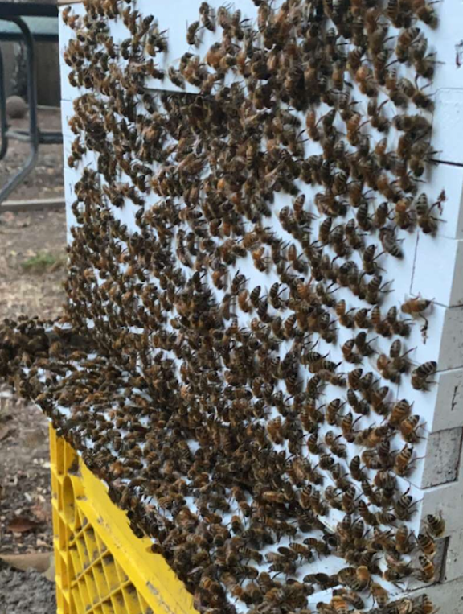
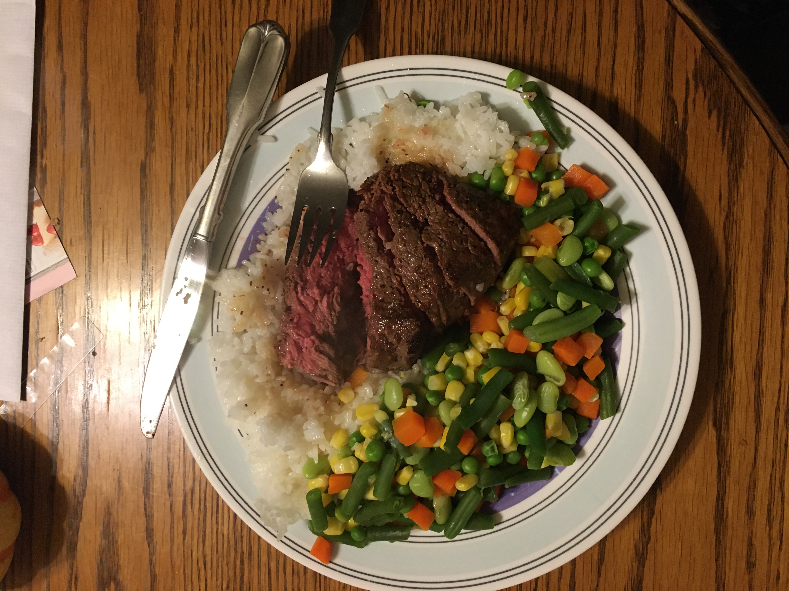
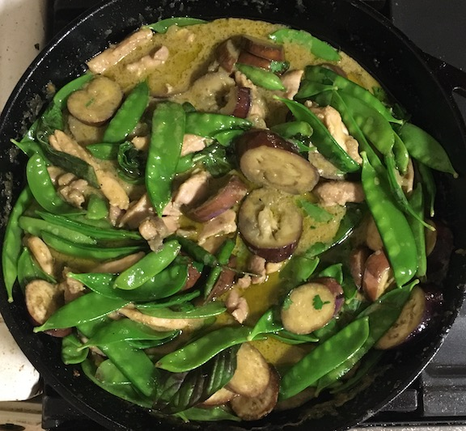
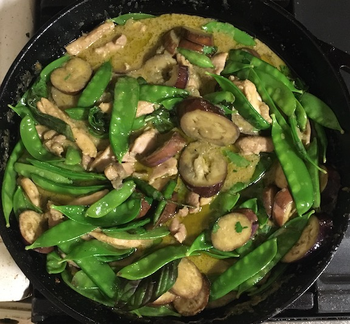
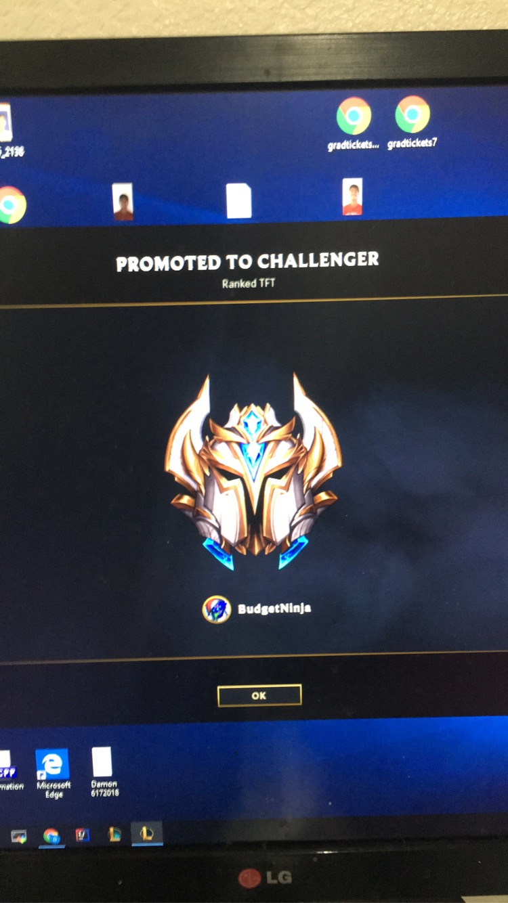

Running
Besides coding, I enjoy running. I’m one of 14 runners on the NCAA Division I collegiate team here at UC Davis. This is currently my third year on the team and I would’ve started my 6th collegiate season here at Davis if COVID-19 did not exist. Despite the season being over, the grind has not stopped. I started playing soccer and basketball growing up like most energetic kids, but running cross country in 9th grade got me hooked onto long distance running. Running has taught me to persevere through pain, to set goals, and so much more. Spiritually, running keeps my mind in the right place, secreting the right hormones to keep my mind at ease. I am also grateful for the connections I have made while running. While I like to connect with people from all backgrounds, most of my close friends and roommates are runners or have run before. After college, I hope to continue competing and train year-round. I’d like to continue to improve my times and compete with the very best until my body cannot handle it.
Here is a photo of the Toomey Track at UC Davis being temporarily closed due to COVID guidelines
Bees
Starting in 2019, my older brother became interested in raising colonies of bees. It was not long after that he roped in my younger brother and I into helping him, while observing the process. Over the past year, we have harvested numerous pounds of honey.
 The above frames are supers, short for superstructures. These boxes are placed on a beehive for bees to store honey.

My younger brother, Damon, posing with a super of hundreds of bees congregated on the super. We often wear protective clothes when handling the hive, especially since some hives are more aggressive than others.

My older brother, David, posing with a photo of the aftermath of churning the honey inside a centrifuge. The bees would mostly pollinate within a one mile radius, and we live in an area populated by numerous wildflowers. The taste of the honey reflected where the bees mostly pollinated, as there was a distinct florescent taste to the local honey.
Before sophomore year, I did not know how to cook a single dish. Eating at the UC Davis dining commons my freshman year was great, but did not prepare me to learn how to cook. Starting off from learning from my family, I eventually branched out to new recipes I found online.
 

Over the summer, I played my favorite videogame called League of Legends. The game mode I play is called Teamfight Tactics, which deviates from the traditional 5v5 format, taking less mechanical skill (reflexes and motor skills). TFT (Teamfight Tactics) is sometimes called auto-chess as it uses more decision-making capabilities. Here is a photo of me reaching the coveted challenger rank in TFT, which is the top 100 in the North America server.

If you haven't played chess before, you should try chess.com, where most players can play against others across the world. I have played thousands of games and reached a rating of 1440 so far. I like to watch GM Hikaru Nakamura and GM Magnus Carlsen as I find their thought processes phenomenal. The rate of how quickly and how deep they can calculate certain moves into the game is mind-boggling. I am still far from the top, but will continue to play and improve. Here's a link to my profile on chess.com if you'd like to check it out!